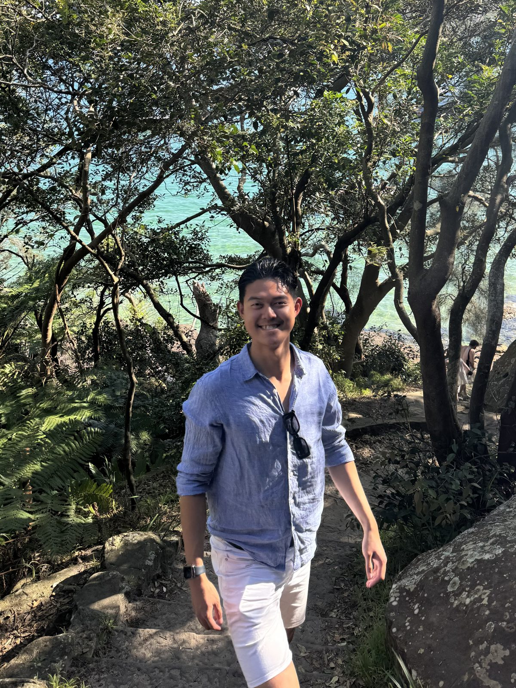
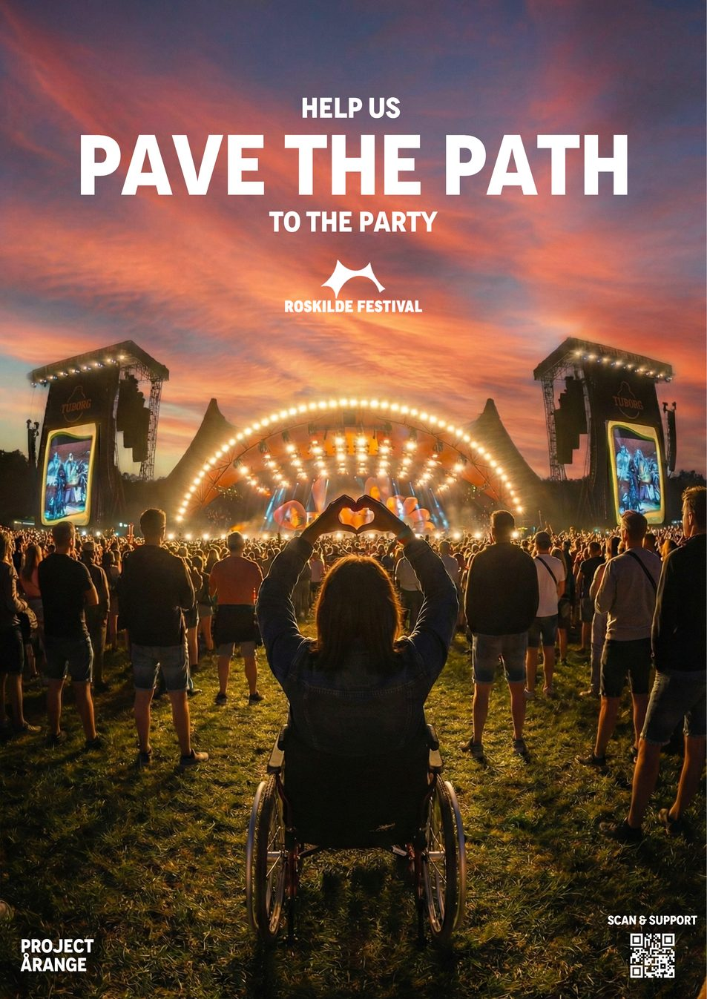
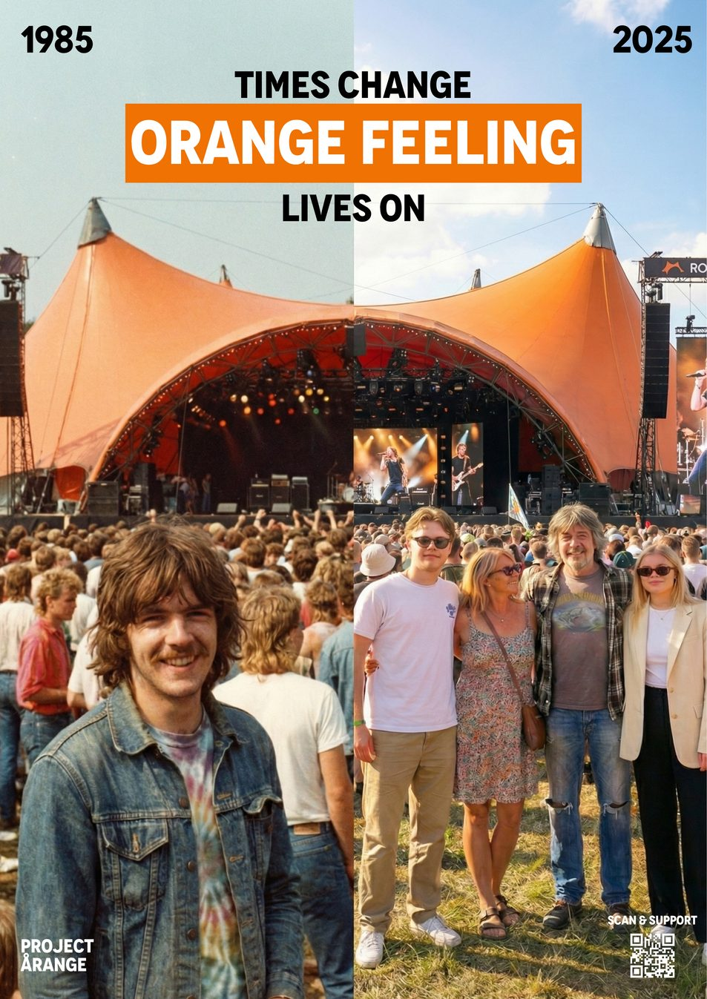
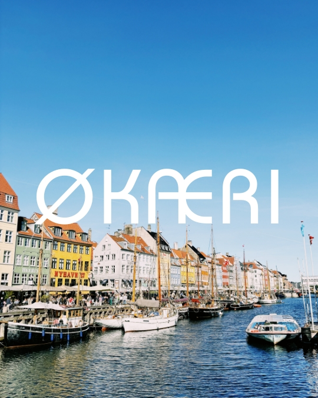
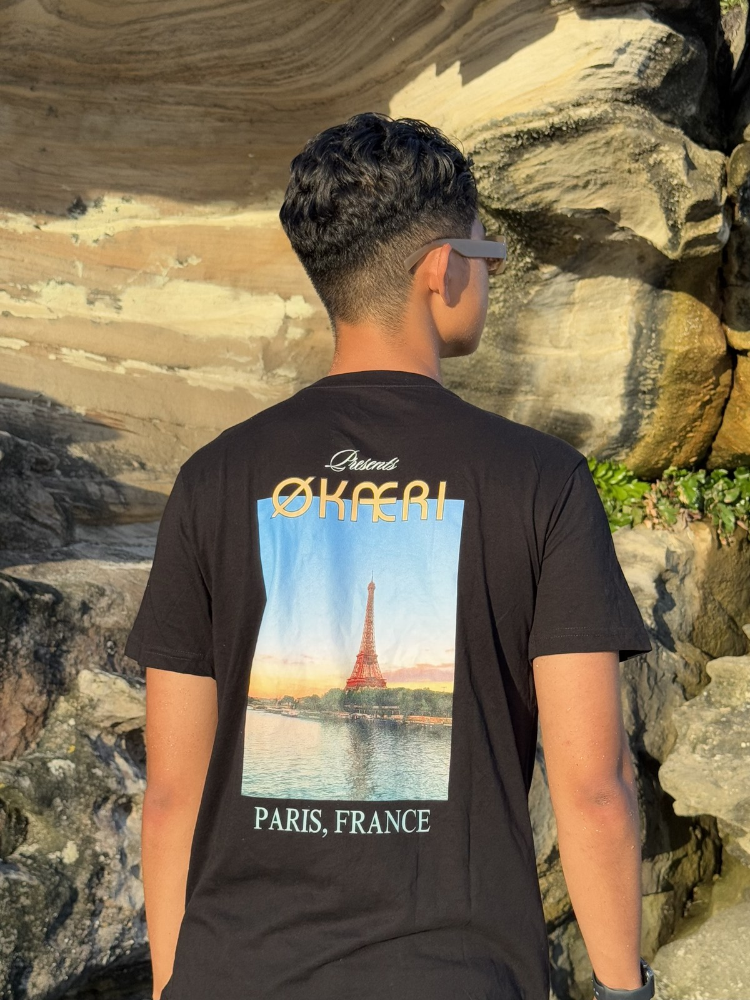
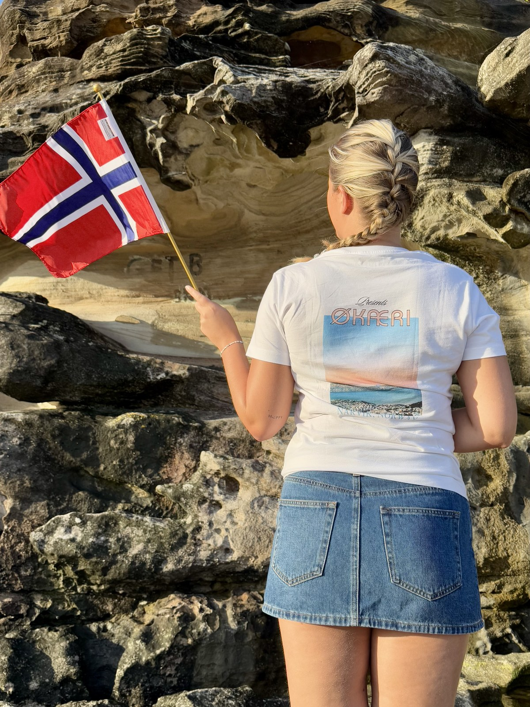
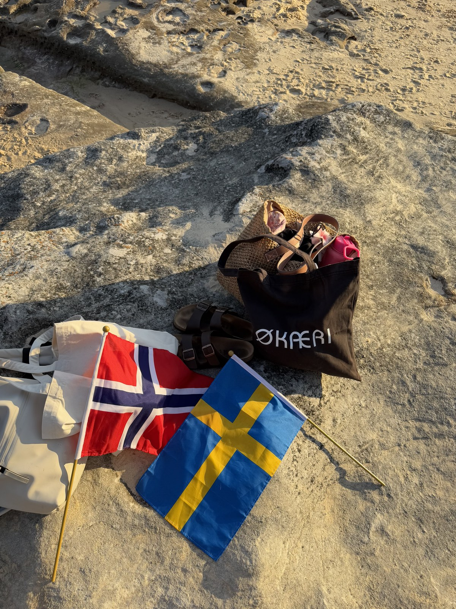

Born in Taipei. Sharpened across Sydney, Lund and Milan. Currently an MSc candidate at Bocconi. Next up: MSc Management of Innovation, RSM Rotterdam — September 2026.

I build brands, stories and visual systems — living somewhere at the seam of strategy, storytelling and craft.
Two of my best-performing posts — a fast intro to how I think and how I make.
Specialising in Media. A chapter defined by creative friction and building deep, collaborative connections. Four projects below — three live builds, one campaign film.


As Social Media Manager for the Bocconi Students' Arts Society, I lead a team of ten across Instagram and LinkedIn — overseeing strategy, calendar, design and voice. The posts below are pulled live from Instagram — swipe each carousel to see the slides.
A year that quietly rewired how I think. Scandinavia taught me restraint: less, said well, lands harder. My visual philosophy draws heavily from the functional, minimalist aesthetic of Scandinavian design and brands like HAY.
Scripted, shot, edited and published reels for Lund's official Instagram, alongside social-planning sessions with the central comms team. Two of the reels I made are embedded below.
Founded in Sweden, ØKÆRI is a sustainable clothing and wall art brand born from the intersection of my East Asian heritage and Scandinavian minimalism. Built as an experiment in mindful consumption and visual storytelling, I drove the project end-to-end — owning every lever: brand identity, product design, e-commerce architecture, social content and the customer experience.




From Taipei to the harbour. Three years building a foundation in marketing, innovation and entrepreneurship. Graduated with Distinction.
Brand positioning, social strategy, e-commerce, market research.
Photography, video, graphics, copy — idea and execution in the same hands.
User research, cross-cultural communication, constant iteration.
Currently based in Milan; relocating to Rotterdam in September. Open to internships across brand, content and creative strategy.